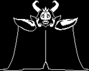

|  |
| Asgore |
|
角色介紹 |
| 中文翻譯 |
艾斯戈爾(羊爸) |
| 初見之地 |
新居 |
|
Toriel(前妻) |
| 關係 |
Asriel(已故的兒子) |
|
Chara(已故的養子) |
|
Undyne (徒弟) |
身為地下世界的統治者，自從親身兒子死去後便頒布了人類狩獵令，但Asgore又不願意主動突破結界攻上地面世界。可能是源於本身十分厭戰，使得他採取等人自己下來這種如此被動的命令。這點也可以從他在與玩家戰鬥前的反應看出。其他遊戲的Boss大多都在開戰前先吐一兩句垃圾話或展現出他滿滿的殺意，但Asgore卻在戰鬥前盡可能的表現出善意，儘管知道他最後要奪取主角的靈魂，他依然不斷詢問著主角是否做好了準備，那怕戰鬥開始依然能感受到他的無奈。我想，這就是身為王的苦衷吧